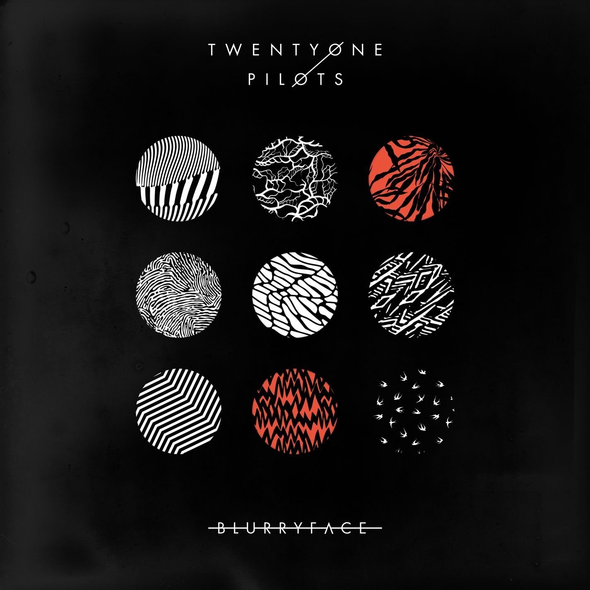

Blurryface
Blurryface es el cuarto álbum de larga duración y segundo álbum de estudio del dúo, lanzado el 17 de mayo de 2015 a través de Fueled by Ramen. Al igual que su álbum anterior Vessel (2013), el álbum toma influencia de varios géneros, incluidos hip hop, rock, pop, reggae y indie. Líricamente, el álbum incorpora temas de salud mental, duda y religión. Contiene los sencillos exitosos "Stressed Out" y "Ride", que alcanzaron el top 5 en Billboard Hot 100. Gracias al primero, Twenty One Pilots fue nominado a su primer Grammy, ganandolo en Febrero de 2017.
